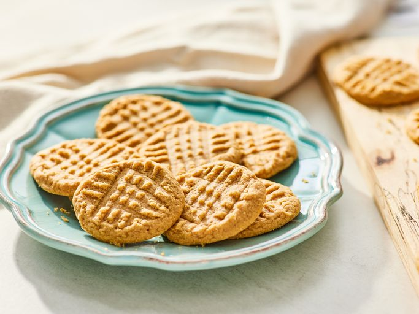

Peanut Butter cookies recipe

Description
These easy peanut butter cookies are made with just 3 ingredients. They're quick to make,
and the cookies taste wonderful! It's a great recipe for kids that are just learning to bake.
Ingredients
- 1 cup peanut butter
- 1 cup white sugar
- 1 egg
Steps
- Gather the ingredients, preheat the oven to 350 degrees F (175 degrees C). Line baking
sheets with parchment paper.
- Mix peanut butter, white sugar, and egg in a medium bowl until smooth.
- Roll mixture into 1-inch balls and place 1 inch apart on an ungreased baking sheet;
flatten each with a fork, making a criss-cross pattern.
- Bake in the preheated oven until cookies are just barely brown on the bottoms, about 6
to 8 minutes. Cool on the baking sheets briefly before removing to a wire rack to cool
completely.
- Serve and enjoy!
Home